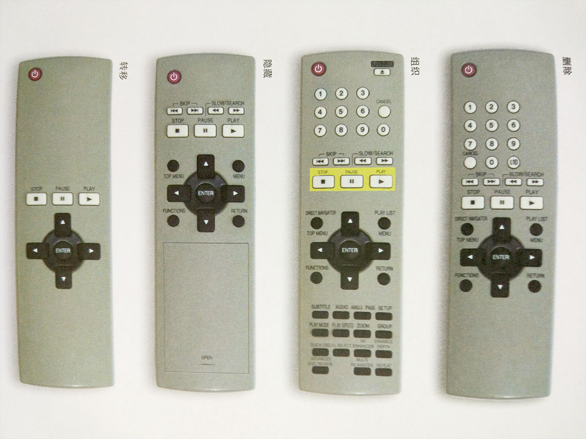
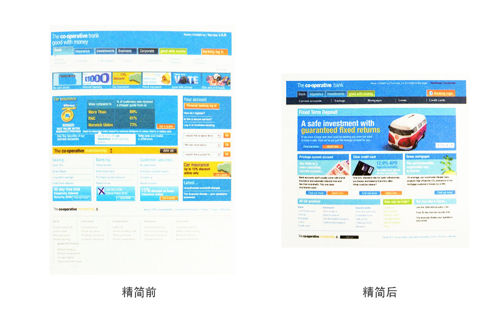

本书作者 Giles Colborne 曾任职于英国航空公司，英国物理学会出版社和灵智集团，二十多年潜心钻研交互式设计与易用性，颇有建树…
个人认为，无论是广告设计、室内设计、架构设计或是产品设计等等，设计方法和技巧都是相通的。因为都是针对特定人群而设计的，或者说都有自己的用户，且与用户之间都有交互。
本书主要分为两部分，第一部分：前两章主要介绍“什么是简约？”，“用户分为几种？”，“设计初期的准备与技巧”。第二部分：后面章节主要讲述交互设计的四策略：删除，组织，隐藏，转移。下面按两部分来分析一下作者的设计思想。
明确认识简约设计
这部分主要介绍简约的概念及如何理解简约设计，还有一些设计基本技巧。
什么样的设计是简约设计？
让用户感觉简单才是真正的简单，而不是管理员或工程师的感觉。
简单的用户体验是初学者、新手或是压力下的主流用户的体验。
简单是让用户感觉自己在掌控一切，他们不想让产品告诉自己该做什么。
明确认识用户，设计主流用户的体验
用户分为三种：专家型用户、随意型用户、主流用户。
去用户使用产品的现场体验。
忽略专家型用户、随意型用户，以主流用户为主
为什么要忽略他们？要以主流用户为主。
- 这些用户占比较少。
- 他们体会不到主流用户的体验，专家总是想要一些复杂的功能，主流用户会感觉很不好用。
- 主流用户最感兴趣的是立即把工作做完，专家刚喜欢首先设定自己的偏好
- 别指望说明书能帮助用户或者教会用户什么东西，在面临压力时，很容易忘掉已掌握的知识，也没时间看说明书，又回到初学者的层次
- 专家希望控制和定制技术，主流用户可不管什么软件或技术，他们希望自己掌控起来容易、可靠、迅速。
例如书中ipod的例子，专家用户会吐槽功能太少，但销量却很高。
感情需求
让用户感觉井然有序、易用、轻松自在，从而产生情愫。
增强体验
在设计产品时，要站在用户的角度分析他们用产品的目的是什么？去增加衍生的体验，要保证通过用户的语言。
用讲故事的形式描述用户体验
故事很容易让人记住，很方便与人分享，可以把大量的体验融入到一个小故事中。
如何讲一个用户体验故事？
好的用户故事应该简明、具体、可信且拥有相关细节。
三要素： 环境、角色、情节。
设计出 情节 ====== > 有可信的 角色 ====== > 发生在可信的 环境
极端的可用性
要设计简约的体验就要追求极端的可用性目标。
| 常规的可用性目标 | 简单性的目标 |
|---|---|
| 特殊人群可以使用 | 任何人都可以使用 |
| 容易使用 | 毫不费力的使用 |
| 快速响应 | 瞬间响应 |
| 快速理解 | 一目了解 |
| 工作可靠 | 始终工作 |
| 直观的错误信息 | 不出错 |
| 完整的信息 | 恰好够用的信息 |
| 用户测试工作 | 在混乱无序的环境中工作 |
用最简单的词汇描述你的想法
要设计一个东西，首先要拿出一个简洁、清晰、完整的描述(Flip:拍摄和分享视频)，然后再用尽可能简单的方式来实现（瞬间开始拍摄…）。
什么因素对用户行为影响最大？
如：用户工作中经常被打断。
不能凭空想象，需要花更多的时间观察现实中的人，通常可以用原型或者竟争性产品作为辅助。
把需求理解透彻后再着手设计
根据作者的经验，任何项目的前3个方案大约都是对重要问题的描述，越来越复杂，而且脑里会没了想法，这时就需要坚持不懈。
让参与项目的每个人真正领悟你的认识
可以见一次讲一次，天天讲，反复讲，直到自己也都厌烦了。。。
让人们记住你的核心理念，这样大家在做的时候，就会知道应该要交付什么样的东西。
简约四策略

删除：去掉所有不必要的按钮，减到不能再减。
组织：按照有意义的标准将按钮划分成组。
隐藏：把那些不是最重要的按钮放在活动仓盖下，避免分散用户注意力。
转移：只要摇控器上保留最基本的功能按钮，将其它控制转移到电视屏幕的菜单，从而将复杂性从遥控器转移到电视。
这几个策略适用于简化功能或简化内容，每个都各自的优缺点，针对不同问题，去选择正确的策略。
删除
美国专门从事跟踪ＩＴ项目成败的权威机构 Standish Group 在2002年发表了一份报告，称 64％ 的软件功能 “从未使用或较少使用”。
比如你的遥控器有多少个按钮从没有按过。
- 删除或省略功能可以创造出成功的产品。
- 删除杂乱的特性可以让设计师更专注于有限的功能，也有助于用户心无旁鹜的完成自己的目标。
避免错删
一些难做且重要的功能，如果有人强烈反对，得到的答复一般都是 会在“第二阶段”“第三阶段”实现。
结果得到一个由简单功能叠加起来的产品，与市场上现有的平庸货别无二致。
总结：不能删掉可以增强用户体验且有价值的功能。
增加价值始于核心体
与新增功能相比，客户更关注基本功能的改进。
要想增强体验，首先不是想着增加新功能，而要看看现有功能是否可以再优化。
砍掉残缺的功能
保留体验差的功能，会额外导致服务与维护的成本。
太多的功能和内容会给用户造成精神上的负担（我到底有没有考虑到这一点？）
但要决定扔掉一些功能往往都有点不舍，就像扔掉一些对自己没用的东西一样，也会不舍。
假如用户想…
“假如用户想…”只会刺激人们的求全心理，担心漏掉了什么需求，为了这份担忧，就要有人付出时间、精力和金钱。
总结：不应该凭空想象用户会怎样，一定要实地考查一下用户到底是不是会那样。否则只会浪费资源去设计一些几乎没人用的功能。用户体验，顾名思义是真正用户的体验，而非假想用户的体验。
不能盲目听从客户的意见
如果客户提出的功能要求全部放到产品中，很可能导致产品失败。
对客户要敢于说不。
在功能较多的情况下通常要做些适当的牺牲，以免影响整个产品。
方案，不是流程
当客户或上级提出一个功能需求时，不能只盯着需求的流程，这样很容易跟着需求的想法设计出一些复杂的流程。
要把精力集中到客户的目的上，也许有更好的解决方案可以实现他们的流程。
功能太多，可用性降低
长远来看，增加功能有害无益
功能太多，势必降低产品的可用性，也有可能降低主流用户的满意度，从而有损产品长期的盈利能力。
删除一项功能，对不同用户影响不同
想取悦所有用户是不可能的，我们只要专注于目标客户的核心任务，让他们满意就行了
满足用户最高优先级的目标，更有价值
在不确定什么功能该保留，什么功能该删除时，根据用户最想要达到的目的，排定优先级，如DVD遥控器
确定用户使用过程中的干扰源，判断哪些功能是主要的。如：看DVD时接到电话，填写表单时被打断离开等。
减轻用户的负担
去掉可有可无的选项、内容和分散注意力的视觉效果。
去掉这些干扰，可以减轻用户的负担，让用户专心做自己想做的事。
去掉视觉元素可以让用户感觉更快，更有安全感。

删除没人会看的文字，比如银行名称下面的口号。
简化布局，删除页面右侧的垂直边栏，让人容易分清哪些重要，哪些不重要。
去掉重复的链接，例如：“告诉我…”之类的下拉菜单，把可点击项的数量减少了20%。
精简按钮和链接的样式，让人容易区分哪些可以点击，哪些不能点击。
减少广告位和广告数量，让目标明确的客户不致被这些内容干扰分心。
去掉分散注意力的元素，如分隔内容的线和横在页面上的黄色背景条，从而减少了视觉上的干扰。
选择有限，用户反而更欢喜
当用户看到一个复杂界面时，会因为看不懂，玩不转而心烦意乱，而乱中更容易出错。
太多的选择容易让人反感。
去掉让人分心的东西
相关研究人员发现，增加文档的超链接会降低读者的理解力，即使读者不会打开超链接也一样。
网页上经常会看到很多让人分心的东西，如：标题栏上、侧边栏上。
一定要牢记删除那些干扰元素。
聪明的默认值
默认时是节省用户时间和精力的有效方式，也是清除设计蓝图中“减速带”的首选方式。
从删除选项和首选项开始
主流用户不喜欢为设置选项和首选项费心劳神。
有时一个选项都多余
主流用户希望“够好就行了，快点”，而专家则希望“尽可能的完美，等多长时间都愿意”
例如：电商的结账页面都去掉了顶部和底部的导航链接，要么买，要么关掉走人。
清除错误是简化用户体验的一个方面
即使非常小的错误也会让用户烦恼。
比如：银行账单查询选择日期控件，公司的工资查询…
在设计简单的体验时，关键的一步是确定哪些地方需要错误信息或者检查错误日志，找出常见的错误。
删除视觉混乱元素
观察设计方案中的每一个元素，想一想为什么需要它？它能提供什么重要信息，还是能提供支持？
如果没它不行，就留着，否则就从方案中删除。书中有一些减少视觉混乱的方法（P98）
删除文字
删除文字有下列三大好处：
- 重要的内容“水落石出”
- 消除了分析满屏内容的麻烦
- 读者会对自己看到了什么更有自信
应该删除哪些文字？
- 删除引见性文字 “欢迎光临我们网站。。。”
- 删除不必要的说明 “填写完这些字段后，请您按提交按钮把申请提交给我们”
- 删除繁锁的解释，比如一些名词解释
- 使用描述性链接：把标题本身作为链接可以让页面更清爽，不要“单击这些” “更多内容”
精简句子
几乎任何句子都能够精简，任何文字都可以删除。详细方法（p102）
总之去掉废话，没必要的词汇。
删除过多
一些关键的操控功能不能删除，人都希望能掌控局面。
足够多的控制可以让用户消除基本需求得不到满足而引发的焦虑，但要避免控制太多，导致因选择而浪费时间。
你能做到
简单的设计通常出自一位眼光独到的设计师，一位“无情的”或“毫不妥协的”创新者之手，但大多数的团队中，妥协和让步已经成为常态。
“删除”策略的核心
就是干掉那些分散注意力的因素，聚焦于项目。
组织
组织是简化设计的最快捷方式。
重点：只强调一两个最重要的主题，太多层次用户眼花缭乱
分块
经典建议，把项组织到“7加减1”个块中；理论上讲，这个数字是人的大脑瞬间能够记住的最大数目。
但并不是所有情况都需分块。比如：a-z排序清单
围绕用户的行为进行组织
先搞清楚主流用户心中的操作步骤，然后再进行组织。建议画出用户的行为，这样更容易理解并组织。
好的分类是非分明
简单的组织模式具有清晰的界限。有时你会遇到同属于两种类别的东西，太多的重叠会导致困惑。如：西红柿是水果也是蔬菜。
所以最简单的分类，通常是指重复交叉最少的分类方法。
字母表与格式排序容易把事情搞乱
字母表排序时，如果不知道要找的东西叫什么？
格式排序时，如果想看相关联的东西就比较麻烦了，如：视频，图片，文字分类
无论是设计还是使用，搜索都比浏览要困难的多
如果想设计简约的体验，最好先对内容有效的组织，再考虑如何搜索。
根据 Jared spool 调查，通常用户只有在网站没有提供有效导航的情况下，才会使用搜索。
试想：要找到一个恰当的搜索关键词，然后再从结果中挑选出来，这个过程有多麻烦。
时间和空间排序
按照时间来组织活动是种简单又通用的方式。
一些实体对象，如：酒店，国家之类的，都可以按照空间来组织。
网格布局
利用不可见的网格来对齐界面元素，是吸引用户注意力的一种有效方式。
网格布局也会让人感觉局促和受压制，可以设计一个不对称的布局来解决这个问题。如：奇数列或跨两三列加少量的元素。
大小和位置
利用网格布局界面时，要注意元素的大小和位置，界面元素的大小要和它们的重要性一致。
本书中一条规则：如果一个元素的重要性为1/2，那就把它的大小做成1/4.
同等重要的元素设计成一样大，把类似的元素放在一起，能减少视觉干扰。
在网站中把重要的链接与内容放中间位置。
对于触摸界面，优先把导航按钮放在底部，这样用户触摸时不会遮挡屏幕，而在大触屏上，把导航放在左（右）侧，可能会给习惯右（左）手的人带来不便。
感知分层技术
利用感知分层技术，我们可以把一些元素放在另一些元素上方，或者两组元素并排起来。如：地铁线路图。
感知分层用不同颜色很容易实现，另外，还可以用灰色、阴影、大小缩放，甚至形状变化来实现。书中有详细的技巧（p130）
用颜色标记信息
分层信息中的颜色利用了人们的记忆原理，因此给人造成的负担很轻，而使用颜色标记信息的代价很明显：需要人们花时间学习和理解。
这些标记在确保人们会花时间学习且会重复使用你的设计时，色标很适合，否则会让人困惑。
期望路径
人们并不总是走你为他们铺好的路。
不断重复使用软件流程，看哪个地方总是抓住你的眼球，要抛掉自己的逻辑去感觉…
隐藏
隐藏都比组织具有一个明显的优势：用户不会因不常用的功能分散注意力。
隐藏部分功能是一种低成本的方案，但是，到底该隐藏哪些功能呢？
不常用但不能少
寻找要隐藏的功能时，设置通常是首选，因为不会经常改变。还有一些不常用的任务。
自定义
自定义可能是一件非常耗时间，非常令人讨厌的事。如：word 中的浮动面板和工具栏。
让用户自定义自己的用户界面前提是用户知道如何布局最有效、最高效。
自动定制
根据用户行为，自动显示或隐藏某些功能菜单。
自动定制不会让界面更简单，反而会把界面搞得更复杂，给用户带来极不便。原因有三个：
- 很难保证默认菜单的准确性
- 缩短菜单后，用户需要把每个功能看两遍才能确定
- 命令的位置可能会变，用户可能找不到
渐进展示
隐藏高级选项。一般高级选项专家级用户才会用到
阶段展示
随着用户逐渐深入界面而展示相应功能，要遵循几条规则：
- 设定一种场景
- 讲一个故事
- 说用户的语言
- 把信息分成小块展示
向导是一种阶段展示的形式，但却经常违反上述规则。一旦搞错，用户的感觉就像是被推下了滑梯。
适时出现
书中《纽约时报》的例子，说明了什么叫做成功的隐藏。
首先，尽可能彻底的隐藏所有需要隐藏的功能；其次，只在合适的时机，合适的位置上显示相应的功能。
提示与线索
书中有两个例子，一个好的（ps工具），一个不好的（Google高级）。
隐藏处理的好的界面会给人一种优雅的感觉：线索尽管细微，却恰到好处。
让功能容易找到
把标签放哪比标签大小重要的多。
即使标签很小，但要是放在了用户关注点上也会收到良好的效果。
用户关注点：当用户打开一个界面时，关注点就广泛。但当遇到问题时，关注点就全聚集在问题区域，如：表单报错，《纽约时报》例子。
隐藏的要求
1.隐藏一次性功能和选项
2.隐藏精确控制选项，但专家用户必须可见
3.不可强迫或寄希望于主流用户使用自定义功能，可以给专家用户提供
4.巧妙的隐藏，换句话说，彻底隐藏适时出现
删除、组织和隐藏——可以非常完美的结合起来，删除不必要的，组织要提供的，隐藏非核心的。不过，接下来我主要讨论的最后一个策略：转移，则涉及对界面进行重新布局。
转移
把合适的功能转移到合适的设备上，但也要把握度。不要过度的转移，要留下常用的。
在设备之间转移
有些功能在有些平台上简单，但在其他平台上就变得复杂，如：小米手环。
移动平台与桌面平台
任何设备都有自己的长处与不足。有时候，把某项任务的某些部分（输入信息）转移到不同平台上可能是一种更好的选择。
向用户转移
把复杂性转移到用户的头脑中。如作者帮一家旅游网站设计旅行规划程序，第一次，用户反馈差，因为智能型程序不断的评判他们的规划。
后来又设计了一个用户可以创建自己命名的文件夹并往里面添加任何想要的东西。
用户最擅长做什么
用户指挥计算机操作，就会给人简单的感觉。让用户感到简单的一个重要前提，就是先搞清楚把什么工作交给计算机，把什么工作留给用户。
创造开放式体验
让一个组件有多种用途。如：汽车的挡风玻璃的加热电阻丝同时也是收音机天线。把相似的功能绑定到一起，这种简化方式非常巧妙。找一个功能总比在几个类似功能中选择容易。学习一个功能也比学习多个容易，且一个功能更容易维护。
菜刀与钢琴
简约界面的最高境界，应该是专家和主流用户都会感觉它非常好用。
开放型界面的秘诀在于尽量减少仅适合中级用户的“便捷”特性。
非结构化数据
表单的输入信息格式不要太严格，如：允许卡号间有空格、电话号码中有｀-,()｀。后台多加几行代码就能解决。
信任用户
如果想把任务转移到用户一方，你必须相信用户有能力完成该任务。
最后的叮嘱
顽固的复杂性
到了设计简单用户体验的最后，往往不是问“怎样才能把这个功能设计的更简单？”，而是问“到底应该把这个复杂性放在哪？”
细节
书中作者在巴黎坐地铁时，手机上下了一个查路线的应用，发现只写了从几号线倒几号线，但是没有写开往哪个方向，这样作者只能在手机上拖来拖去寻找线路的终点。
给用户留下足够的想象空间
让他们能够想象到当前正在做的事情同样也是自己生活的一部分。如：在线查找假期旅行线路和查阅手册比较。